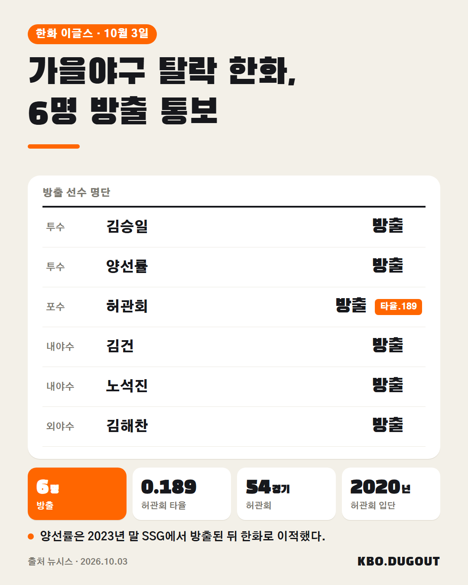

한화가 투수 김승일·양선률, 포수 허관회, 내야수 김건·노석진, 외야수 김해찬 등 6명에게 재계약 불가를 통보했습니다
QA 없음
한화가 투수 김승일·양선률, 포수 허관회, 내야수 김건·노석진, 외야수 김해찬 등 6명에게 재계약 불가를 통보했습니다
QA 없음

한화가 가을야구 탈락 후 선수단 정리에 나서 투수 김승일·양선률, 포수 허관회, 내야수 김건·노석진, 외야수 김해찬 등 6명을 방출했다. 허관회는 2020년 입단 후 4시즌 54경기에서 타율 0.189를 기록했다. #KBO #프로야구 #야구 #허관회 #한화이글스
QA 없음
애틀랜타는 좌완투수 상대 OPS 0.696으로 약점 2년 연속 AL 사이영상 스쿠벌, 5차전에도 등판 예정
QA 출처와 사실이 다를 수 있음

현재 홈런 1위 힐리어드·김도영, 역대 공동 22위. 역대 몇 위까지 갈 수 있을까? 출처: 위키백과·언론 보도 (위키백과 CC BY-SA) · 올해 기록 기사 10.2
QA 없음

현재 타율 1위 구자욱 0.371, 역대 9위ㅋㅋ 역대 몇 위까지 갈 수 있을까? 출처: 위키백과 (위키백과 CC BY-SA) · 올해 기록 기사 10.1
QA 없음

현재 타점 1위 힐리어드, 신기록까지 24타점. 신기록 깰 수 있을까? 출처: 위키백과 (위키백과 CC BY-SA) · 올해 기록 운영자 입력
QA 없음